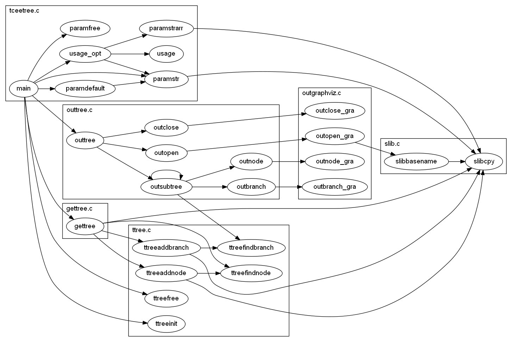
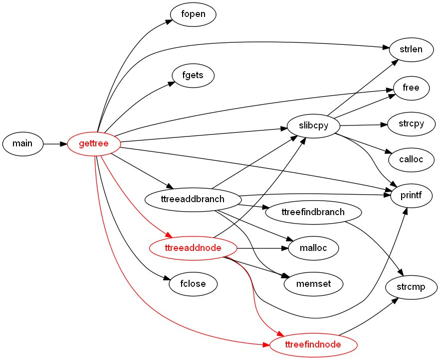

tceetree could be useful for you when:
If this is what you are looking for, follow these steps:
that will recurse subdirectories and list all C files in cscope.files.
There are a lot of options you can specify when invoking dot to customize the graph, for example:
You may wish to give a try to one of the other tools provided by Graphviz instead of dot (see dot.1.pdf for a list).
This is the synopsis of tceetree:
tceetree [-c <<depth>] [-C <depth>] [-d <file>] [-f] [-F] [-h] [-i <file>] [-o <file>] [-p <function>] [-r <root>] [-s <style>] [-v] [-V] [-x <function>]
OptionDescription
-c <depth> Depth of tree for called functions: default is max. Depth is measured starting from root(s) function(s).
-C <depth> Depth of tree for calling functions: default is 0. Depth is measured starting from root(s) function(s) in backward direction.
-d <file> Output a shortened cscope output file: default is no output. The shortened file includes only function information and can be used as input (-i) for following calls to tceetree to increase speed on big projects.
-f Print the file name where the call is near to branch.
-F Group functions into one cluster for each source file.
-h Print help.
-i <file> Input cscope output file: default is cscope.out.
-o <file> Output file for graphviz: default is tceetree.out.
-p <function> Highlight call path till function. Path starts from root(s) till the specified function (only one), in backward or forward direction.
-r <root> Root function of tree: default is main. This option may occur more than once for multiple roots (max 5).
-s <style> Style for highlight call path: 0 = red color (default); 1 = blue color; 2 = green color; 3 = bold; 4 = dashed; 5 = dotted.
-v Print version.
-V Verbose output (mainly for debugging purposes).
-x <function> Function to be excluded from tree. This option may occur more than once for multiple functions (max 20). -x LIBRARY is a special case for excluding all library functions, i.e. not found defined in any file. All the functions, called (calling) directly or indirectly from the excluded one(s) only, will be excluded too.
tceetree can be called with no option at all: default options will be used.
Examples:
 